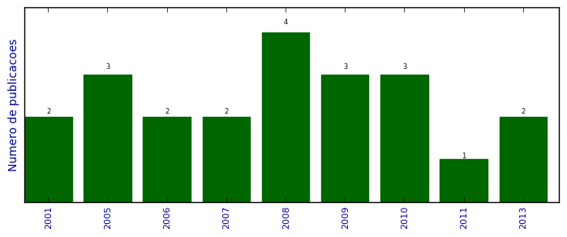

UFSM - Análise do Lattes
Trabalhos completos publicados em anais de congressos

Número total de itens: 22
(A1: 0, A2: 0, B1: 1, B2: 0, B3: 4, B4: 0, B5: 1, C: 0, Qualis não identificado: 16)
Legenda Qualis:
- Publicação para a qual o nome exato do Qualis foi identificado: Qualis <estrato>
- Publicação para a qual um nome similar (não exato) do Qualis foi identificado: Qualis <estrato> (nome similar)
- Publicação para a qual nenhum nome do Qualis foi identificado: Qualis não identificado (nome usado na busca)
2013
| 1. | CALEGARO, B. C. ; Vizzotto, Juliana Kaizer. Quantum Monad using Java Closures. Em: Workshop Escola de Informática Teórica, 2013. [ citações Google Scholar | citações Microsoft Acadêmico | busca Google ] Qualis: Não identificado (Workshop Escola de Informática Teórica) |
| 2. | VIZZOTTO, J. K. ; CALEGARO, B. C. ; PIVETA, E. K.. A Double Effect λ-calculus for Quantum Computation. Em: Simpósio Brasileiro de Linguagens de Programação, 2013.  [ citações Google Scholar | citações Microsoft Acadêmico | busca Google ] Qualis: B3 |
2011
| 1. | VIZZOTTO, J. K.. Towards a Quantum Monadic Arrow Lambda-calculus. Em: 14th Brazilian Symposium on Formal Methods, 2011. [ citações Google Scholar | citações Microsoft Acadêmico | busca Google ] Qualis: Não identificado (14th Brazilian Symposium on Formal Methods) |
2010
| 1. | Martins, M. ; VIZZOTTO, J. K. ; LIBRELOTTO, G. R.. Simulando o modelo ORCH-OR através de autômatos celulares quânticos. Em: II Simpósio de Computação Aplicada - SCA, 2010. [ citações Google Scholar | citações Microsoft Acadêmico | busca Google ] Qualis: Não identificado (II Simpósio de Computação Aplicada - SCA) |
| 2. | VIZZOTTO, J. K. ; CHARAO, A. S. ; Souto, R.S. ; VELHO, H. F. C.. Aplicações de Grades Computacionais. Em: X Escola Regional de Alto Desempenho, p. 51-82, 2010. [ citações Google Scholar | citações Microsoft Acadêmico | busca Google ] Qualis: B5 (Escola Regional de Alto Desempenho) |
| 3. | VIZZOTTO, J. K. ; SABRY, A.. Quantum Measurements from a Programming Point of View. Em: Workshop Escola de Computação e Informação Quântica, 2010. [ citações Google Scholar | citações Microsoft Acadêmico | busca Google ] Qualis: Não identificado (Workshop Escola de Computação e Informação Quântica) |
2009
| 1. | LIBRELOTTO, G. R. ; VIZZOTTO, J. K. ; AUGUSTIN, I.. Um Compilador para a Linguagem Reativa Síncrona Distribuída. Em: Third Workshop on Languages and Tools for Parallel and Distributed Programming, 2009. [ citações Google Scholar | citações Microsoft Acadêmico | busca Google ] Qualis: Não identificado (Third Workshop on Languages and Tools for Parallel and Distributed Programming) |
| 2. | VIZZOTTO, J. K. ; DU BOIS, A. R. ; SABRY, A.. The Arrow Calculus as a Quantum Programming Language. Em: Workshop on Logic, v. 5514, p. 379-393, 2009. [ citações Google Scholar | citações Microsoft Acadêmico | busca Google ] Qualis: Não identificado (Workshop on Logic) |
| 3. | VIZZOTTO, J. K. ; LIBRELOTTO, G. R. ; SABRY, A.. Reasoning about General Quantum Programs over Mixed States. Em: Brazilian Symposim on Formal Methods, v. 5902, p. 321-335, 2009. [ citações Google Scholar | citações Microsoft Acadêmico | busca Google ] Qualis: B1 (International Symposium on Formal Methods) |
2008
| 1. | DU BOIS, A. R. ; VIZZOTTO, J. K.. Memórias transacionais e sua programação usando STM Haskell. Em: Simpósio Brasileiro de Linguagens de Programação, 2008. [ citações Google Scholar | citações Microsoft Acadêmico | busca Google ] Qualis: B3 |
| 2. | LIBRELOTTO, G. R. ; Martins, M. ; MACHADO, H. T. ; VIZZOTTO, J. K. ; Ramalho, J.C. ; HENRIQUES, P. R.. Generating Semantic Networks to the PubMed. Em: XATA 2008: 6ª Conferência Nacional, v. 6, p. 94-103, 2008. [ citações Google Scholar | citações Microsoft Acadêmico | busca Google ] Qualis: Não identificado (XATA 2008: 6ª Conferência Nacional) |
| 3. | LIBRELOTTO, G. R. ; VIZZOTTO, J. K. ; AUGUSTIN, I. ; TOSCANI, S. S.. A Semântica Formal da Linguagem RS. Em: Simpósio Brasileiro de Linguagens de Programação, 2008. [ citações Google Scholar | citações Microsoft Acadêmico | busca Google ] Qualis: B3 |
| 4. | VIZZOTTO, J. K. ; DU BOIS, A. R.. Modelling Parallel Quantum Computing using Transactional Memory. Em: Joint Workshop on: Quantum Physics and Logic and Development of Computational Models, p. 166-173, 2008. [ citações Google Scholar | citações Microsoft Acadêmico | busca Google ] Qualis: Não identificado (Joint Workshop on: Quantum Physics and Logic and Development of Computational Models) |
2007
| 1. | VIZZOTTO, J. K. ; COSTA, A. C. R. ; SABRY, A.. Structuring General and Complete Quantum Computations in Haskell: The Arrows Approach. Em: XX Concurso de Teses e Dissertações, 2007. [ citações Google Scholar | citações Microsoft Acadêmico | busca Google ] Qualis: Não identificado (XX Concurso de Teses e Dissertações) |
| 2. | VIZZOTTO, J. K. ; Martins, M. ; COSTA, A. C. R.. Towards a Monadic Approach for MArgolus Parallel Quantum Celular Automaton. Em: First Workshop on Languages and Tools for Parallel and Distributed Programming, 2007. [ citações Google Scholar | citações Microsoft Acadêmico | busca Google ] Qualis: Não identificado (First Workshop on Languages and Tools for Parallel and Distributed Programming) |
2006
| 1. | VIZZOTTO, J. K. ; COSTA, A. C. R.. Towards Quantum Haskell via Quantum Arrows. Em: Primeiro Workshop-Escola de Computação e Informação Quântica, v. 1, 2006. [ citações Google Scholar | citações Microsoft Acadêmico | busca Google ] Qualis: Não identificado (Primeiro Workshop-Escola de Computação e Informação Quântica) |
| 2. | VIZZOTTO, J. K. ; COSTA, A. C. R. ; SABRY, A.. Quantum Arrows in Haskell. Em: 4th International Workshop on Quantum Programming Languages, p. 1-15, 2006. [ citações Google Scholar | citações Microsoft Acadêmico | busca Google ] Qualis: Não identificado (4th International Workshop on Quantum Programming Languages) |
2005
| 1. | ALTENKIRCH, T. ; GRATTAGE, J. ; VIZZOTTO, J. K. ; SABRY, A.. An Algebra of Pure Quantum Programming Languages. Em: 3rd International Workshop on Quantum Programming Languages, 2005. [ citações Google Scholar | citações Microsoft Acadêmico | busca Google ] Qualis: Não identificado (3rd International Workshop on Quantum Programming Languages) |
| 2. | VIZZOTTO, J. K. ; COSTA, A. C. R.. Concurrent Quantum Programming in Haskell. Em: VII Congresso Brasileiro de Redes Neurais, 2005. [ citações Google Scholar | citações Microsoft Acadêmico | busca Google ] Qualis: B3 (Simpósio Brasileiro de Redes Neurais) |
| 3. | VIZZOTTO, J. K. ; COSTA, A. C. R. ; SABRY, A.. Modelling Quantum Effects in Haskell. Em: Semana Acadêmica PPGC/UFRGS, 2005. [ citações Google Scholar | citações Microsoft Acadêmico | busca Google ] Qualis: Não identificado (Semana Acadêmica PPGC/UFRGS) |
2001
| 1. | MARTINI, Alfio Ricardo ; WOLTER, U. ; HAEUSLER, E. H. ; VIZZOTTO, J. K.. Linking Logics for Multiparadigm Software Specification. Em: V World Multiconference on Systems, 2001. [ citações Google Scholar | citações Microsoft Acadêmico | busca Google ] Qualis: Não identificado (V World Multiconference on Systems) |
| 2. | VIZZOTTO, J. K. ; MARTINI, Alfio Ricardo ; COSTA, A. C. R.. Reutilizando Provas através de Mapeamentos entre Lógicas. Em: IV Workshop de Métodos Formais, p. 101-106, 2001. [ citações Google Scholar | citações Microsoft Acadêmico | busca Google ] Qualis: Não identificado (IV Workshop de Métodos Formais) |
(*) Relatório criado com produções desde 1999 até HOJE
Data de processamento: 02/04/2014 17:53:38